library(tidyverse)
library(data.table)
library(dplyr)
library(DataExplorer)
library(fastDummies)
library(ggplot2)
library(vcd)
library(gridExtra)
library(corrplot)
library(DT)
library(lightgbm)
library(caret)
library(Metrics)
library(ROSE)
library(fastDummies)Venture Capital Funding
Abstract
This project focuses on a classification problem with the objective of predicting whether a company received venture capital (VC) funding in the year 2000. It presents a unique challenge that combines the application of data science and machine learning methodologies with an in-depth exploration of investment patterns and business growth dynamics. We will utilize a dataset featuring several variables, including the company identifier (firmcode), company age (Age), country of operation (Country), industry sector (Industry), and a range of financial metrics related to company size and performance (such as the natural logarithm of sales revenue, number of employees, and total assets). Additionally, the dataset contains a special variable (VCinv), which represents the frequency of VC investments in the company’s country and industry from 1996 to 2005 and will be used as an instrumental variable for VC in Heckman models.
1 Import Packages
Import the necessary libraries
Let’s load the dataset
load("VC_data.RData")2 Description of the dataset
Let’s take a brief look on the data
dim(VCdata)[1] 2610 24ls(VCdata) [1] "age" "country" "firmcode" "industry" "logassets"
[6] "logassets_1" "logassets_2" "logassets_3" "logassets_4" "logassets_5"
[11] "logemp" "logemp_1" "logemp_2" "logemp_3" "logemp_4"
[16] "logemp_5" "logsales" "logsales_1" "logsales_2" "logsales_3"
[21] "logsales_4" "logsales_5" "VC" "VCinv" glimpse(VCdata)Rows: 2,610
Columns: 24
$ firmcode <chr> "1123", "3455", "2210", "6454", "3449", "1433", "3842", "7…
$ VC <dbl> 0, 1, 0, 0, 1, 0, 0, 0, 0, 0, 0, 0, 0, 0, 0, 0, 0, 0, 0, 0…
$ age <dbl> 3, 0, 3, 4, 0, 4, 0, 12, 5, 11, 0, 7, 0, 7, 3, 5, 15, 0, 0…
$ country <chr> "FINLAND", "GERMANY", "FRANCE", "SPAIN", "GERMANY", "FINLA…
$ industry <chr> "Software", "Biotech", "Other R&D", "ICT manufacturing", "…
$ VCinv <dbl> 0.004594963, 0.027428571, 0.001359065, 0.001767230, 0.0069…
$ logsales <dbl> 4.619535, 0.000000, 4.906051, 7.249131, 0.000000, 4.505667…
$ logemp <dbl> 0.6931472, 0.0000000, 1.6094379, 2.5649493, 0.0000000, 0.6…
$ logassets <dbl> 4.796612, 0.000000, 4.079435, 6.588883, 0.000000, 3.581796…
$ logemp_1 <dbl> 0.6931472, 1.6094379, 1.6094379, 2.7725887, 2.7725887, 0.6…
$ logemp_2 <dbl> 0.6931472, 1.6094379, NA, 3.1354942, 3.2580965, 0.6931472,…
$ logemp_3 <dbl> 0.6931472, 2.4849067, 1.3862944, 3.0445225, 3.2580965, 0.6…
$ logemp_4 <dbl> 0.6931472, 2.4849067, 1.3862944, 3.1780539, 3.2580965, NA,…
$ logemp_5 <dbl> 0.6931472, 3.4011974, 1.3862944, 3.4011974, 3.1780539, NA,…
$ logsales_1 <dbl> 4.215877, 5.748874, 5.097703, 7.439082, 7.926267, 4.557057…
$ logsales_2 <dbl> 4.714251, NA, 4.750316, 7.535911, 7.266609, 4.852439, NA, …
$ logsales_3 <dbl> 4.698802, 7.394920, 5.146444, 7.615391, 8.251705, 4.190956…
$ logsales_4 <dbl> 4.529790, 7.651690, 5.048716, 7.788105, 8.731167, NA, 7.12…
$ logsales_5 <dbl> 4.706643, 8.604625, 5.092274, 7.994081, 8.572102, NA, NA, …
$ logassets_1 <dbl> 4.662480, NA, 4.251836, 6.852866, NA, 3.552675, NA, 7.8095…
$ logassets_2 <dbl> 4.899704, NA, 4.204111, 6.988987, NA, 3.745209, NA, 8.0076…
$ logassets_3 <dbl> 4.845005, NA, 4.427922, 7.190490, NA, 3.599880, NA, 8.0795…
$ logassets_4 <dbl> 4.680842, NA, 4.227416, 7.376255, NA, NA, NA, 8.047971, 7.…
$ logassets_5 <dbl> 4.7510977, NA, 4.2364635, 7.5408087, NA, NA, NA, 8.2059126…The VCdata dataset contains 23 features, and 1 target value. There are a total of 2610 observations. There are 3 string variables in the features and the rest are all type of double. The target value is a double but will be treated as a 2-categorical variable considering that it is a binary problem.
Here are the top and bottom 5 rows:
head(VCdata, 5)# A tibble: 5 × 24
firmcode VC age country industry VCinv logsales logemp logassets
<chr> <dbl> <dbl> <chr> <chr> <dbl> <dbl> <dbl> <dbl>
1 1123 0 3 FINLAND Software 0.00459 4.62 0.693 4.80
2 3455 1 0 GERMANY Biotech 0.0274 0 0 0
3 2210 0 3 FRANCE Other R&D 0.00136 4.91 1.61 4.08
4 6454 0 4 SPAIN ICT manufactur… 0.00177 7.25 2.56 6.59
5 3449 1 0 GERMANY Software 0.00696 0 0 0
# ℹ 15 more variables: logemp_1 <dbl>, logemp_2 <dbl>, logemp_3 <dbl>,
# logemp_4 <dbl>, logemp_5 <dbl>, logsales_1 <dbl>, logsales_2 <dbl>,
# logsales_3 <dbl>, logsales_4 <dbl>, logsales_5 <dbl>, logassets_1 <dbl>,
# logassets_2 <dbl>, logassets_3 <dbl>, logassets_4 <dbl>, logassets_5 <dbl>tail(VCdata, 5)# A tibble: 5 × 24
firmcode VC age country industry VCinv logsales logemp logassets
<chr> <dbl> <dbl> <chr> <chr> <dbl> <dbl> <dbl> <dbl>
1 4699 0 0 GERMANY Software 0.00696 0 0 0
2 2333 0 4 FRANCE Other R&D 0.00136 7.29 2.48 6.74
3 7761 0 7 UK Software 0.00314 7.57 3.04 6.25
4 7794 0 10 UK Software 0.00314 7.23 2.30 6.95
5 6033 0 9 SPAIN ICT manufactur… 0.00177 6.72 1.61 6.46
# ℹ 15 more variables: logemp_1 <dbl>, logemp_2 <dbl>, logemp_3 <dbl>,
# logemp_4 <dbl>, logemp_5 <dbl>, logsales_1 <dbl>, logsales_2 <dbl>,
# logsales_3 <dbl>, logsales_4 <dbl>, logsales_5 <dbl>, logassets_1 <dbl>,
# logassets_2 <dbl>, logassets_3 <dbl>, logassets_4 <dbl>, logassets_5 <dbl>Let’s check the missing value in total
sprintf("Nbr of missing value in total: %f",sum(is.na(VCdata)))[1] "Nbr of missing value in total: 6239.000000"plot_missing(VCdata)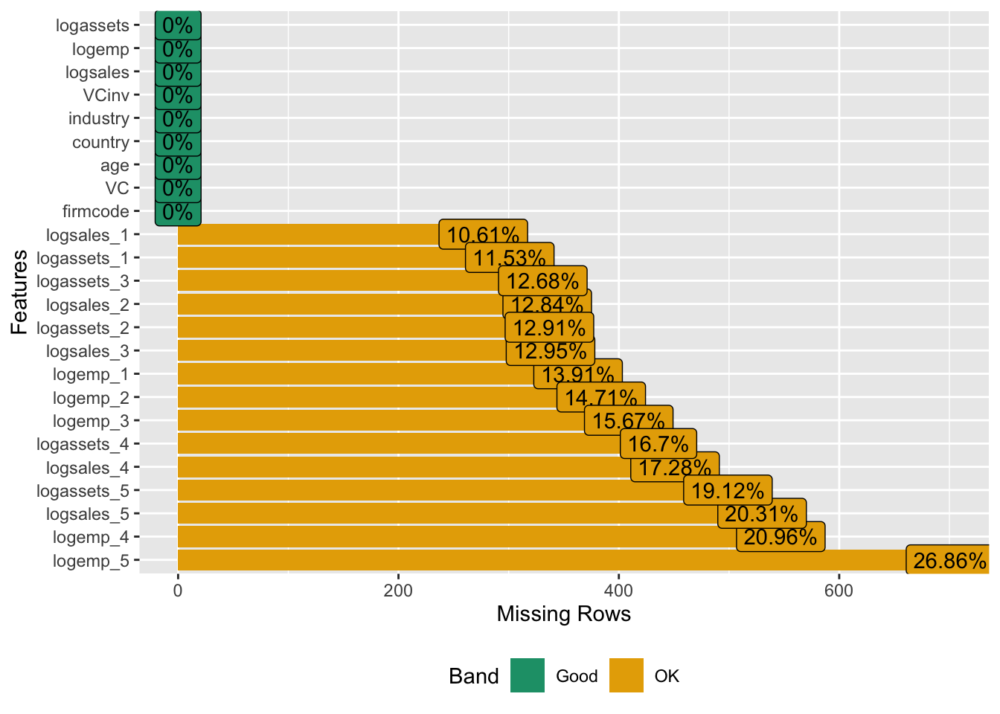
Contains 6239 null values distributed in different rows and columns. Compared to 2610 observations, that’s an average of 3 per row, so I can’t perform a simple delete operation, huge amounts of information would be lost.
Then briefly check the target values’ distribution.
sprintf("The nbr of observations of VC = 1: %f", count(VCdata[VCdata$VC == '1', ]))[1] "The nbr of observations of VC = 1: 71.000000"sprintf("The nbr of observations of VC = 0: %f", count(VCdata[VCdata$VC == '0', ]))[1] "The nbr of observations of VC = 0: 2539.000000"The results show that the ratio of the two categories of data for the target value is 71:2539, making the data extremely unbalanced.
3 EDA
In this part, I am going to further explorer the features.
3.1 Univariate Analysis
Firstly, let’s take a look of the summary of all features.
summary(VCdata) firmcode VC age country
Length:2610 Min. :0.0000 Min. : 0.000 Length:2610
Class :character 1st Qu.:0.0000 1st Qu.: 0.000 Class :character
Mode :character Median :0.0000 Median : 4.000 Mode :character
Mean :0.0272 Mean : 4.954
3rd Qu.:0.0000 3rd Qu.: 9.000
Max. :1.0000 Max. :15.000
industry VCinv logsales logemp
Length:2610 Min. :0.000000 Min. : 0.000 Min. :0.000
Class :character 1st Qu.:0.003136 1st Qu.: 0.000 1st Qu.:0.000
Mode :character Median :0.005464 Median : 5.755 Median :1.609
Mean :0.006544 Mean : 5.072 Mean :1.819
3rd Qu.:0.007952 3rd Qu.: 7.632 3rd Qu.:2.944
Max. :0.047059 Max. :14.923 Max. :8.537
logassets logemp_1 logemp_2 logemp_3
Min. : 0.000 Min. :0.000 Min. :0.000 Min. :0.000
1st Qu.: 0.000 1st Qu.:1.099 1st Qu.:1.386 1st Qu.:1.386
Median : 5.424 Median :2.197 Median :2.303 Median :2.303
Mean : 4.835 Mean :2.445 Mean :2.508 Mean :2.510
3rd Qu.: 7.328 3rd Qu.:3.367 3rd Qu.:3.466 3rd Qu.:3.434
Max. :14.215 Max. :9.237 Max. :9.443 Max. :9.225
NA's :363 NA's :384 NA's :409
logemp_4 logemp_5 logsales_1 logsales_2
Min. :0.000 Min. :0.000 Min. : 0.000 Min. : 0.000
1st Qu.:1.099 1st Qu.:1.099 1st Qu.: 5.278 1st Qu.: 5.439
Median :2.197 Median :2.197 Median : 6.619 Median : 6.767
Mean :2.400 Mean :2.391 Mean : 6.780 Mean : 6.920
3rd Qu.:3.332 3rd Qu.:3.296 3rd Qu.: 8.114 3rd Qu.: 8.243
Max. :9.183 Max. :9.187 Max. :15.074 Max. :15.086
NA's :547 NA's :701 NA's :277 NA's :335
logsales_3 logsales_4 logsales_5 logassets_1
Min. : 0.000 Min. : 0.000 Min. : 0.000 Min. : 0.000
1st Qu.: 5.420 1st Qu.: 5.348 1st Qu.: 5.346 1st Qu.: 5.035
Median : 6.760 Median : 6.707 Median : 6.723 Median : 6.468
Mean : 6.847 Mean : 6.761 Mean : 6.763 Mean : 6.614
3rd Qu.: 8.158 3rd Qu.: 8.090 3rd Qu.: 8.077 3rd Qu.: 8.086
Max. :14.948 Max. :15.104 Max. :15.083 Max. :15.763
NA's :338 NA's :451 NA's :530 NA's :301
logassets_2 logassets_3 logassets_4 logassets_5
Min. : 0.000 Min. : 0.000 Min. : 0.000 Min. : 0.000
1st Qu.: 5.180 1st Qu.: 5.123 1st Qu.: 5.104 1st Qu.: 5.121
Median : 6.564 Median : 6.519 Median : 6.482 Median : 6.527
Mean : 6.683 Mean : 6.619 Mean : 6.534 Mean : 6.536
3rd Qu.: 8.077 3rd Qu.: 8.071 3rd Qu.: 7.969 3rd Qu.: 7.909
Max. :15.691 Max. :15.453 Max. :14.455 Max. :14.490
NA's :337 NA's :331 NA's :436 NA's :499 Firmcode are the IDs which are meaningless, so drop it.
VCdata <- VCdata %>%
select(-firmcode)3.1.1 Categirical variables
To find out the distribution of the categorical variables, I define a function to plot the population’s distribution and percent distribution as well.
plot_categorical <- function(data, column_name) {
data_summary <- data %>%
group_by(!!sym(column_name)) %>%
summarise(Count = n()) %>%
mutate(Percent = Count / sum(Count) * 100)
p1 <- ggplot(data_summary, aes_string(x = column_name, y = "Count")) +
geom_bar(stat = "identity", fill = "steelblue") +
theme_minimal() +
labs(title = paste("Count Distribution of", column_name), x = column_name, y = "Count")
p2 <- ggplot(data_summary, aes_string(x = column_name, y = "Percent")) +
geom_bar(stat = "identity", fill = "lightblue") +
theme_minimal() +
labs(title = paste("Percent Distribution of", column_name), x = column_name, y = "Percent")
grid.arrange(p1, p2, ncol = 2)
}- Distribution of firms’ age
unique(VCdata$age) [1] 3 0 4 12 5 11 7 15 8 2 6 13 9 1 10 14length(unique(VCdata$age))[1] 16plot_categorical(VCdata, "age")Warning: `aes_string()` was deprecated in ggplot2 3.0.0.
ℹ Please use tidy evaluation idioms with `aes()`.
ℹ See also `vignette("ggplot2-in-packages")` for more information.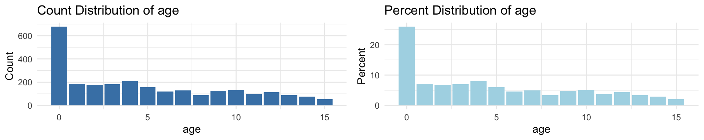
Here, even though age is a continuous variable, it is a discrete variable, so here I chose to view the distribution in a bar chart. According to the image, there are more than 600 companies with age 0, which is more than a quarter of the total dataset.
- Distribution of country
plot_categorical(VCdata, "country")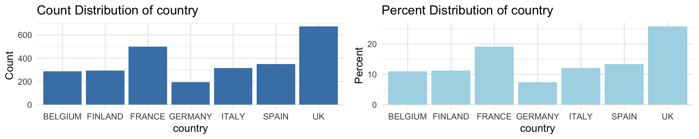
The UK’s accounted for more than a quarter of the total, France’s for nearly 20%, and the others for about 10% each, and mainly in Western Europe.
- Distribution of industry
plot_categorical(VCdata, "industry")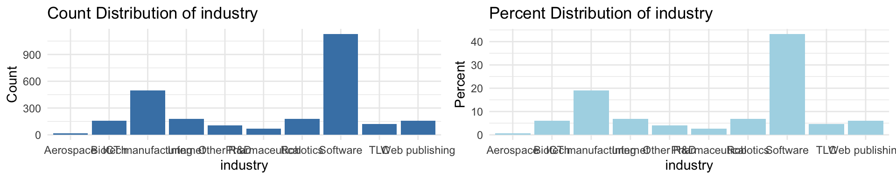
Depends on the distribution of the type of industry, the grapes show that software accounted for for than 40% of the total, manufacturing for nearly 20%. All the others are around 5%, with Aerospace being the least.
3.1.2 Quantitative variables
Define a function to show box-plot and violin-plot in order to show the distribution of quantitative variables
plot_quantitative <- function(data, column_name) {
box_plot <- ggplot(data, aes(x = "", y = !!sym(column_name))) +
geom_boxplot() +
theme_minimal() +
labs(title = paste("Box plot of", column_name), x = "", y = column_name)
violin_plot <- ggplot(data, aes(x = "", y = !!sym(column_name))) +
geom_violin(trim = FALSE) +
theme_minimal() +
labs(title = paste("Violin Plot of", column_name), x = "", y = column_name)
grid.arrange(box_plot, violin_plot, ncol = 2)
}- Distribution of VCinv
plot_quantitative(VCdata, "VCinv")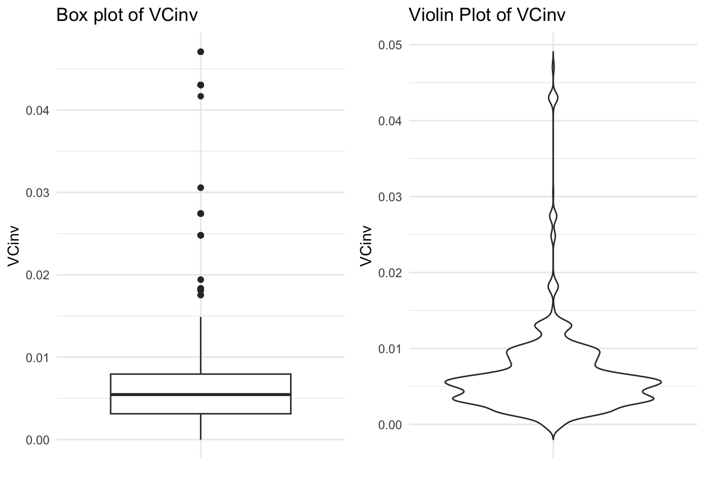
The overall investment frequency is mainly distributed around 0.005 ± 0.0025 and there are a lot of outliers mainly in the interval 0.015-0.05.
So I wanted to take a more visual look at these discrete values.
VCinv0015 <- VCdata %>%
filter(VCinv > 0.015)
print(VCinv0015)# A tibble: 98 × 23
VC age country industry VCinv logsales logemp logassets logemp_1
<dbl> <dbl> <chr> <chr> <dbl> <dbl> <dbl> <dbl> <dbl>
1 1 0 GERMANY Biotech 0.0274 0 0 0 1.61
2 0 2 ITALY TLC 0.0248 6.12 2.94 6.29 2.71
3 0 4 SPAIN Biotech 0.0183 5.47 1.39 5.41 1.39
4 0 0 GERMANY Biotech 0.0274 0 0 0 1.79
5 0 5 ITALY TLC 0.0248 7.74 3.04 6.73 3.04
6 1 0 ITALY TLC 0.0248 0 0 0 2.08
7 0 0 GERMANY Biotech 0.0274 0 0 0 1.10
8 0 0 GERMANY Biotech 0.0274 0 0 0 NA
9 0 0 GERMANY Biotech 0.0274 0 0 0 NA
10 1 0 GERMANY Biotech 0.0274 0 0 0 0.693
# ℹ 88 more rows
# ℹ 14 more variables: logemp_2 <dbl>, logemp_3 <dbl>, logemp_4 <dbl>,
# logemp_5 <dbl>, logsales_1 <dbl>, logsales_2 <dbl>, logsales_3 <dbl>,
# logsales_4 <dbl>, logsales_5 <dbl>, logassets_1 <dbl>, logassets_2 <dbl>,
# logassets_3 <dbl>, logassets_4 <dbl>, logassets_5 <dbl>These discrete observations are mainly Biotech or Internet industries. What specific insights are available may require further research.
3.2 Bivariate Analysis
- Age vs VC
ggplot(VCdata, aes(x = factor(VC), y = age, fill = factor(VC))) +
geom_boxplot() +
labs(x = "VC Received", y = "Age", title = "Distribution of Age by VC Status") +
scale_fill_discrete(name = "VC Status", labels = c("No", "Yes")) +
theme_minimal()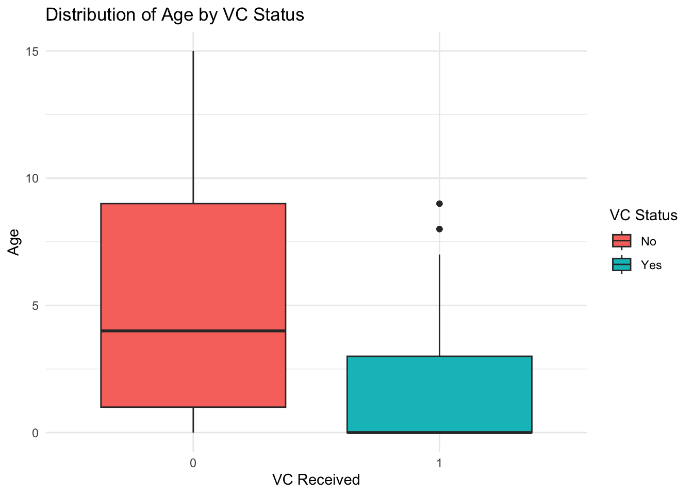
anova_result <- aov(VC ~ factor(age), data = VCdata)
summary(anova_result) Df Sum Sq Mean Sq F value Pr(>F)
factor(age) 15 1.59 0.10601 4.075 2.01e-07 ***
Residuals 2594 67.48 0.02601
---
Signif. codes: 0 '***' 0.001 '**' 0.01 '*' 0.05 '.' 0.1 ' ' 1According to the box plot demonstration, for the category of VC=1, there is a smaller trend relative to VC=0, which means that it may be possible for the public young firms to receive capital more instead. p-value of 2.01e-07 was then obtained by using ANOVA analysis, which indicates that there is a significant difference between the age groups on the variable of receiving VC.
- Logxxxx vs VC
log_vars <- names(VCdata)[grepl("log", names(VCdata))]
plot_list <- lapply(log_vars, function(var) {
ggplot(VCdata, aes(x = factor(VC), y = get(var), fill = factor(VC))) +
geom_boxplot() +
labs(x = "VC Received", y = var, title = paste(var, "by VC Status")) +
scale_fill_discrete(name = "VC Status", labels = c("No", "Yes")) +
theme_minimal()
})
n_cols <- 3
n_rows <- ceiling(length(plot_list) / n_cols)
grid.arrange(grobs = plot_list, ncol = n_cols, nrow = n_rows)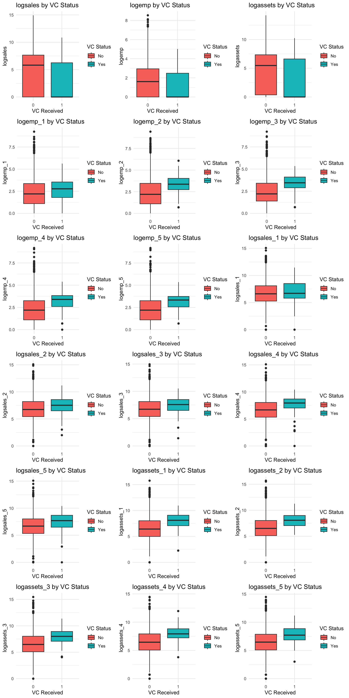
anova_results <- sapply(log_vars, function(var) {
anova_result <- aov(reformulate(var, response = "VC"), data = VCdata)
summary(anova_result)[[1]]["Pr(>F)"][1, 1]
})
anova_df <- data.frame(Variable = names(anova_results), P_Value = unlist(anova_results))
datatable(anova_df) %>%
formatStyle(
'P_Value',
backgroundColor = styleInterval(0.05, c('lightgreen', 'lightcoral'))
)Based on the distribution and the p-value after ANOVA analysis, I found that the vast majority of log-related FEATURES showed a significant difference between the two groups.
log_data <- VCdata[log_vars]
cor_matrix <- cor(log_data, use = "pairwise.complete.obs")
corrplot(cor_matrix, method = "color", type = "upper", order = "hclust",
tl.col = "black", tl.srt = 45, addCoef.col = "white")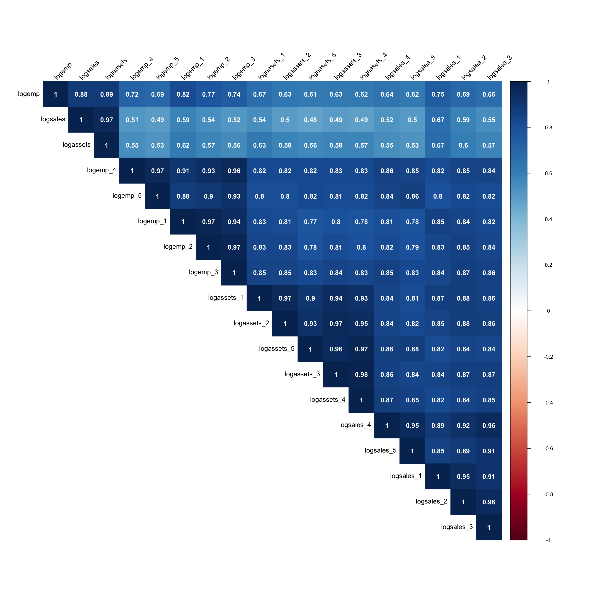
Here they are all positively correlated with each other, even strongly positively correlated, I actually did not find a reasonable explanation for this, the log was chosen to store this information in order to correct the original distribution that was skewed to the left into one that is easier to recognize, but if earnings, market capitalization, and number of employees are all increasing as the year changes, then there should be a 50/50 split between positive and negative correlation. Further research is needed here.
- Industry / Country vs VC
fisher_industry_vc <- fisher.test(table(VCdata$industry, VCdata$VC), simulate.p.value = TRUE)
fisher_country_vc <- fisher.test(table(VCdata$country, VCdata$VC), simulate.p.value = TRUE)
print(fisher_industry_vc)
Fisher's Exact Test for Count Data with simulated p-value (based on
2000 replicates)
data: table(VCdata$industry, VCdata$VC)
p-value = 0.0009995
alternative hypothesis: two.sidedprint(fisher_country_vc)
Fisher's Exact Test for Count Data with simulated p-value (based on
2000 replicates)
data: table(VCdata$country, VCdata$VC)
p-value = 0.0004998
alternative hypothesis: two.sidedpar(mfrow = c(2, 1))
mosaicplot(table(VCdata$industry, VCdata$VC), main = "Mosaic Plot of Industry and VC", color = TRUE, las = 2)
mosaicplot(table(VCdata$country, VCdata$VC), main = "Mosaic Plot of Country and VC", color = TRUE, las = 2)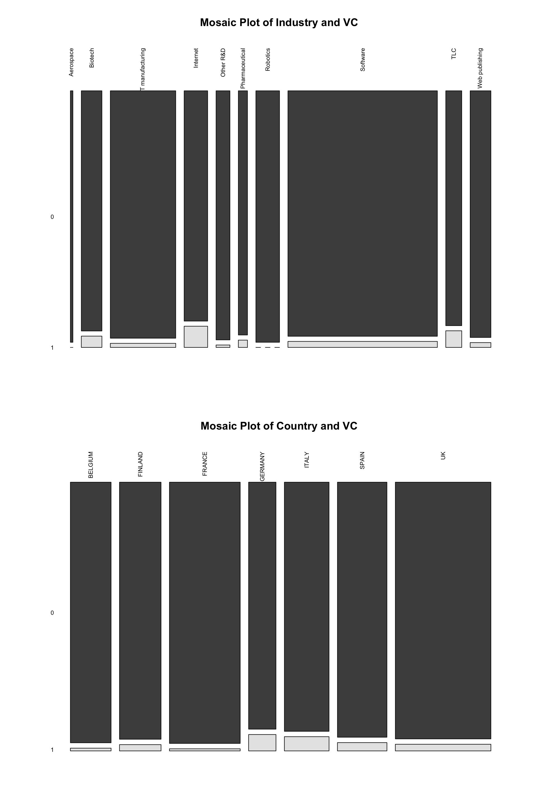
Here the chi-square test was abandoned in favor of the Fischer test due to the extremely limited amount of data of certain types. Based on the p-value it was shown that there was indeed a significant difference in the distribution between the groups. Again, based on the mosaic plot it is easy to see that the Internet and TLC sectors have a higher percentage of investments, with Biotech coming in second. In terms of country orientation, Germany is the highest, followed by Italy. France has a relatively small share, albeit from a large base.
4 Modeling
In this part, I am going to train the model, and here I chose lightgbm. The power for binary classification problems, the support for nulls, and the fast computational power were the main reasons for me to choose it.
So apply one-hot encoding on the categorical variables.
categorical_columns <- c("country", "industry")
VCdata_encoded <- dummy_cols(VCdata, select_columns = categorical_columns, remove_first_dummy = TRUE, remove_selected_columns = TRUE)
colnames(VCdata_encoded) <- make.names(colnames(VCdata_encoded), unique = TRUE)Take a look on the encoded data to make sure the process has been done correctly.
head(VCdata_encoded)# A tibble: 6 × 36
VC age VCinv logsales logemp logassets logemp_1 logemp_2 logemp_3
<dbl> <dbl> <dbl> <dbl> <dbl> <dbl> <dbl> <dbl> <dbl>
1 0 3 0.00459 4.62 0.693 4.80 0.693 0.693 0.693
2 1 0 0.0274 0 0 0 1.61 1.61 2.48
3 0 3 0.00136 4.91 1.61 4.08 1.61 NA 1.39
4 0 4 0.00177 7.25 2.56 6.59 2.77 3.14 3.04
5 1 0 0.00696 0 0 0 2.77 3.26 3.26
6 0 4 0.00459 4.51 0.693 3.58 0.693 0.693 0.693
# ℹ 27 more variables: logemp_4 <dbl>, logemp_5 <dbl>, logsales_1 <dbl>,
# logsales_2 <dbl>, logsales_3 <dbl>, logsales_4 <dbl>, logsales_5 <dbl>,
# logassets_1 <dbl>, logassets_2 <dbl>, logassets_3 <dbl>, logassets_4 <dbl>,
# logassets_5 <dbl>, country_FINLAND <int>, country_FRANCE <int>,
# country_GERMANY <int>, country_ITALY <int>, country_SPAIN <int>,
# country_UK <int>, industry_Biotech <int>, industry_ICT.manufacturing <int>,
# industry_Internet <int>, industry_Other.R.D <int>, …Next divide the train, validation, and test sets. The ratio is 8:1:1. Due to the extreme imbalance in the dataset, here I chose to use oversampling to address the imbalance. I also tried mixed sampling before this, but the accuracy of the predicted results was only 50%.
set.seed(48)
trainIndex <- createDataPartition(VCdata_encoded$VC, p = .8, list = FALSE)
data_train <- VCdata_encoded[trainIndex, ]
data_temp <- VCdata_encoded[-trainIndex, ]
valIndex <- createDataPartition(data_temp$VC, p = 0.5, list = FALSE)
data_val <- data_temp[valIndex, ]
data_test <- data_temp[-valIndex, ]
data_train <- ovun.sample(VC ~ ., data = data_train, method = "over", N = nrow(data_train) * 2)$dataInitialize the model and set the parameters, after several attempts, the learning rate is better at 0.001, while setting the early stop parameter to prevent overfitting.
train_set <- lgb.Dataset(data = as.matrix(data_train[,-which(names(data_train) == "VC")]), label = data_train$VC)
val_set <- lgb.Dataset(data = as.matrix(data_val[,-which(names(data_val) == "VC")]), label = data_val$VC)
params <- list(
objective = "binary",
metric = "binary_logloss",
learning_rate = 0.001
)
model_lgb <- lgb.train(
params = params,
data = train_set,
valids = list(validation = val_set),
nrounds = 100000,
early_stopping_rounds = 10,
verbose = 0
)[LightGBM] [Warning] No further splits with positive gain, best gain: -inf
[LightGBM] [Warning] No further splits with positive gain, best gain: -inf
[LightGBM] [Warning] No further splits with positive gain, best gain: -inf
[LightGBM] [Warning] No further splits with positive gain, best gain: -inf
[LightGBM] [Warning] No further splits with positive gain, best gain: -inf
[LightGBM] [Warning] No further splits with positive gain, best gain: -inf
[LightGBM] [Warning] No further splits with positive gain, best gain: -inf
[LightGBM] [Warning] No further splits with positive gain, best gain: -inf
[LightGBM] [Warning] No further splits with positive gain, best gain: -inf
[LightGBM] [Warning] No further splits with positive gain, best gain: -inf
[LightGBM] [Warning] No further splits with positive gain, best gain: -inf
[LightGBM] [Warning] No further splits with positive gain, best gain: -inf
[LightGBM] [Warning] No further splits with positive gain, best gain: -inf
[LightGBM] [Warning] No further splits with positive gain, best gain: -inf
[LightGBM] [Warning] No further splits with positive gain, best gain: -inf
[LightGBM] [Warning] No further splits with positive gain, best gain: -inf
[LightGBM] [Warning] No further splits with positive gain, best gain: -inf
[LightGBM] [Warning] No further splits with positive gain, best gain: -inf
[LightGBM] [Warning] No further splits with positive gain, best gain: -inf
[LightGBM] [Warning] No further splits with positive gain, best gain: -inf
[LightGBM] [Warning] No further splits with positive gain, best gain: -inf
[LightGBM] [Warning] No further splits with positive gain, best gain: -inf
[LightGBM] [Warning] No further splits with positive gain, best gain: -inf
[LightGBM] [Warning] No further splits with positive gain, best gain: -inf
[LightGBM] [Warning] No further splits with positive gain, best gain: -inf
[LightGBM] [Warning] No further splits with positive gain, best gain: -inf
[LightGBM] [Warning] No further splits with positive gain, best gain: -inf
[LightGBM] [Warning] No further splits with positive gain, best gain: -inf
[LightGBM] [Warning] No further splits with positive gain, best gain: -inf
[LightGBM] [Warning] No further splits with positive gain, best gain: -inf
[LightGBM] [Warning] No further splits with positive gain, best gain: -inf
[LightGBM] [Warning] No further splits with positive gain, best gain: -inf
[LightGBM] [Warning] No further splits with positive gain, best gain: -inf
[LightGBM] [Warning] No further splits with positive gain, best gain: -inf
[LightGBM] [Warning] No further splits with positive gain, best gain: -inf
[LightGBM] [Warning] No further splits with positive gain, best gain: -inf
[LightGBM] [Warning] No further splits with positive gain, best gain: -inf
[LightGBM] [Warning] No further splits with positive gain, best gain: -inf
[LightGBM] [Warning] No further splits with positive gain, best gain: -inf
[LightGBM] [Warning] No further splits with positive gain, best gain: -inf
[LightGBM] [Warning] No further splits with positive gain, best gain: -inf
[LightGBM] [Warning] No further splits with positive gain, best gain: -inf
[LightGBM] [Warning] No further splits with positive gain, best gain: -inf
[LightGBM] [Warning] No further splits with positive gain, best gain: -inf
[LightGBM] [Warning] No further splits with positive gain, best gain: -inf
[LightGBM] [Warning] No further splits with positive gain, best gain: -inf
[LightGBM] [Warning] No further splits with positive gain, best gain: -inf
[LightGBM] [Warning] No further splits with positive gain, best gain: -inf
[LightGBM] [Warning] No further splits with positive gain, best gain: -inf
[LightGBM] [Warning] No further splits with positive gain, best gain: -inf
[LightGBM] [Warning] No further splits with positive gain, best gain: -inf
[LightGBM] [Warning] No further splits with positive gain, best gain: -inf
[LightGBM] [Warning] No further splits with positive gain, best gain: -inf
[LightGBM] [Warning] No further splits with positive gain, best gain: -inf
[LightGBM] [Warning] No further splits with positive gain, best gain: -inf
[LightGBM] [Warning] No further splits with positive gain, best gain: -inf
[LightGBM] [Warning] No further splits with positive gain, best gain: -inf
[LightGBM] [Warning] No further splits with positive gain, best gain: -inf
[LightGBM] [Warning] No further splits with positive gain, best gain: -inf
[LightGBM] [Warning] No further splits with positive gain, best gain: -infIn order to prevent the html page from taking up too much space, I will temporarily set the verbose to 0. If you need to check it further, you can adjust its value to 1.
After 4341 iterations, the loss was reduced from 1.36246 to a minimum of 0.0794232.
Then look at the accuracy on the training and validation sets.
train_preds <- predict(model_lgb, data.matrix(data_train[,-which(names(data_train) == "VC")]),
num_iteration = model_lgb$best_iter)
val_preds <- predict(model_lgb, data.matrix(data_val[,-which(names(data_val) == "VC")]),
num_iteration = model_lgb$best_iter)
train_preds_class <- ifelse(train_preds > 0.5, 1, 0)
val_preds_class <- ifelse(val_preds > 0.5, 1, 0)
train_accuracy <- accuracy(train_preds_class, data_train$VC)
val_accuracy <- accuracy(val_preds_class, data_val$VC)
print(paste("Training accuracy:", train_accuracy))[1] "Training accuracy: 1"print(paste("Validation accuracy:", val_accuracy))[1] "Validation accuracy: 0.980842911877395"The accuracy reached 100% on the training set and 98% on the validation set, with little difference and no overfitting.
Since the model performance is already good, grid searching and cross-validation are not performed here, and other operations such as further hyper-parameter tuning and improving generalization are not performed.
I then make predictions on a test set and print the accuracy.
predictions <- predict(model_lgb, data.matrix(data_test[,-which(names(data_test) == "VC")]))
predictions_binary <- ifelse(predictions > 0.5, 1, 0)
test_accuracy <- accuracy(data_test$VC, predictions_binary)
print(paste("Test accuracy:", test_accuracy))[1] "Test accuracy: 0.942528735632184"The accuracy on the test set is 94.2%, indicating a high generalization capability and good performance.
conf_mat <- confusionMatrix(as.factor(predictions_binary), as.factor(data_test$VC))
recall <- conf_mat$byClass['Sensitivity']
print(paste("Recall:", recall))[1] "Recall: 0.9800796812749"preds_vs_actual <- data.frame(Predicted = predictions_binary, Actual = data_test$VC)
#preds_vs_actual
actual_ones <- preds_vs_actual %>%
filter(Actual == 1)
#actual_onesI also checked the recall rate here because the first time I used a combination of oversampling and not dealing with missing values (these two attempts are not reflected in the code part). To prevent the model from achieving high accuracy by blindly predicting the majority class, I further output the recall rate. Here, the recall rate reached 98%, indicating that the prediction of the positive cases (the minority class, which, after oversampling, is no longer an absolute minority) is also precise. Additionally, I output a comparison table of predicted values and actual values. I have commented it out here to prevent taking up too much space on the HTML page.
Then I looked at the feature importance.
importance <- lgb.importance(model_lgb)
importance_sorted <- importance[order(-importance$Gain), ]
ggplot(importance_sorted, aes(x = reorder(Feature, -Gain), y = Gain)) +
geom_col(fill = 'steelblue') +
theme_minimal() +
theme(axis.text.x = element_text(angle = 45, hjust = 1)) +
labs(title = "Feature Importance", x = "Features", y = "Importance (Gain)")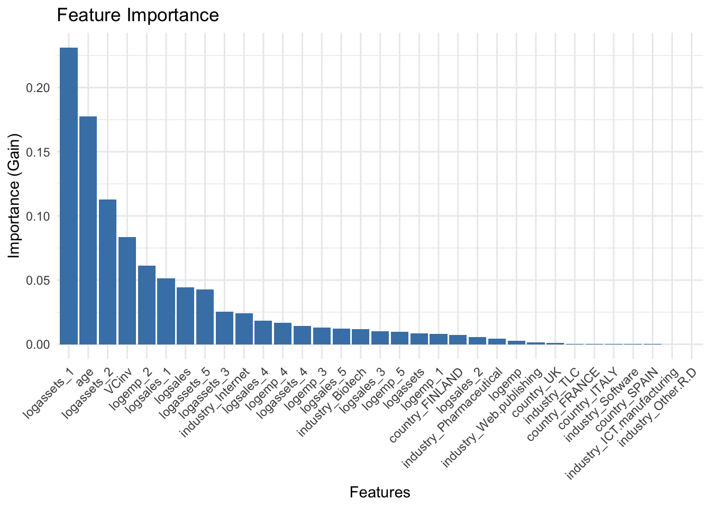
Based on the feature importance, I found that logemp_3 (the natural logarithm of the number of employees in 2002) and age made an unusually significant contribution to the prediction of VC. Industry and country did not seem to provide much help. Here, all the feature values did not differ by thousands, so no normalization or similar operations were performed.
5 Thinking of datalackage(Beta version)
I’ve always harbored a concern, not just because the model’s accuracy is exceptionally high without any signs of overfitting, but also regarding the possibility of a misrepresentation in the feature descriptions provided in the problem statement. My concern arises from the definition of VC as a dummy variable equal to one if the company received VC in the year 2000. However, the variables logemp_1 to logemp_5, logsales_1 to logsales_5, and logassets_1 to logassets_5 represent the natural logarithms of the company’s number of employees, sales revenues, and total assets at the end of the year 2000 through to 2004 respectively. I am questioning whether using data from the year 2000 onwards could lead to data leakage, thus accounting for the model’s unusually high predictive accuracy. Alternatively, could there be an error in the problem statement’s explanation of VC? To address these concerns, I have decided to eliminate all data from the year 2000 onwards and to repeat the above processes.
log_vars_to_remove <- grep("log.*_[1-5]", names(VCdata), value = TRUE)
VCdata_1999 <- VCdata[ , !(names(VCdata) %in% log_vars_to_remove)]
head(VCdata_1999)# A tibble: 6 × 8
VC age country industry VCinv logsales logemp logassets
<dbl> <dbl> <chr> <chr> <dbl> <dbl> <dbl> <dbl>
1 0 3 FINLAND Software 0.00459 4.62 0.693 4.80
2 1 0 GERMANY Biotech 0.0274 0 0 0
3 0 3 FRANCE Other R&D 0.00136 4.91 1.61 4.08
4 0 4 SPAIN ICT manufacturing 0.00177 7.25 2.56 6.59
5 1 0 GERMANY Software 0.00696 0 0 0
6 0 4 FINLAND Software 0.00459 4.51 0.693 3.58categorical_columns <- c("country", "industry")
VCdata_encoded <- dummy_cols(VCdata_1999, select_columns = categorical_columns, remove_first_dummy = TRUE, remove_selected_columns = TRUE)
colnames(VCdata_encoded) <- make.names(colnames(VCdata_encoded), unique = TRUE)set.seed(48)
trainIndex <- createDataPartition(VCdata_encoded$VC, p = .8, list = FALSE)
data_train <- VCdata_encoded[trainIndex, ]
data_temp <- VCdata_encoded[-trainIndex, ]
valIndex <- createDataPartition(data_temp$VC, p = 0.5, list = FALSE)
data_val <- data_temp[valIndex, ]
data_test <- data_temp[-valIndex, ]
data_train_balanced <- ovun.sample(VC ~ ., data = data_train, method = "over", N = nrow(data_train) * 2)$datatrain_set <- lgb.Dataset(data = as.matrix(data_train_balanced[,-which(names(data_train_balanced) == "VC")]), label = data_train_balanced$VC)
val_set <- lgb.Dataset(data = as.matrix(data_val[,-which(names(data_val) == "VC")]), label = data_val$VC)
params <- list(
objective = "binary",
metric = "binary_logloss",
learning_rate = 0.001
)
model_lgb <- lgb.train(
params = params,
data = train_set,
valids = list(validation = val_set),
nrounds = 100000,
early_stopping_rounds = 10,
verbose = 0
)train_preds <- predict(model_lgb, data.matrix(data_train_balanced[,-which(names(data_train_balanced) == "VC")]),
num_iteration = model_lgb$best_iter)
val_preds <- predict(model_lgb, data.matrix(data_val[,-which(names(data_val) == "VC")]),
num_iteration = model_lgb$best_iter)
train_preds_class <- ifelse(train_preds > 0.5, 1, 0)
val_preds_class <- ifelse(val_preds > 0.5, 1, 0)
train_accuracy <- accuracy(train_preds_class, data_train_balanced$VC)
val_accuracy <- accuracy(val_preds_class, data_val$VC)
print(paste("Training accuracy:", train_accuracy))[1] "Training accuracy: 0.925287356321839"print(paste("Validation accuracy:", val_accuracy))[1] "Validation accuracy: 0.842911877394636"predictions <- predict(model_lgb, data.matrix(data_test[,-which(names(data_test) == "VC")]))
predictions_binary <- ifelse(predictions > 0.5, 1, 0)
test_accuracy <- accuracy(data_test$VC, predictions_binary)
print(paste("Test accuracy:", test_accuracy))[1] "Test accuracy: 0.823754789272031"conf_mat <- confusionMatrix(as.factor(predictions_binary), as.factor(data_test$VC))
recall <- conf_mat$byClass['Sensitivity']
print(paste("Recall:", recall))[1] "Recall: 0.844621513944223"importance <- lgb.importance(model_lgb)
importance_sorted <- importance[order(-importance$Gain), ]
ggplot(importance_sorted, aes(x = reorder(Feature, -Gain), y = Gain)) +
geom_col(fill = 'steelblue') +
theme_minimal() +
theme(axis.text.x = element_text(angle = 45, hjust = 1)) +
labs(title = "Feature Importance", x = "Features", y = "Importance (Gain)")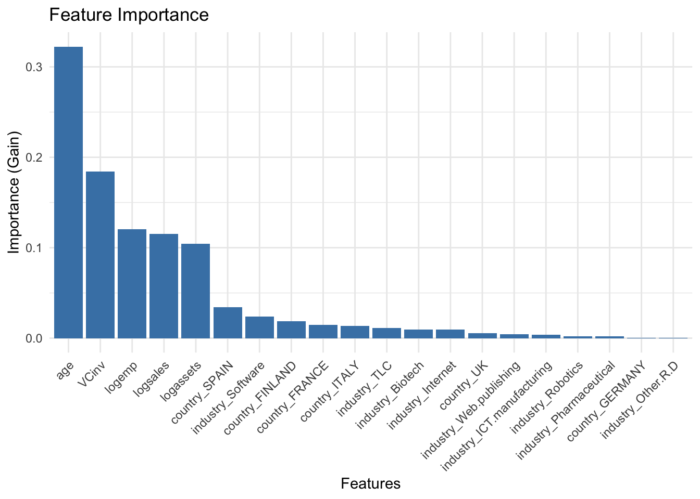
The following points can be found here based on the results:
“Training accuracy: 0.925287356321839”
“Validation accuracy: 0.842911877394636”
“Test accuracy: 0.823754789272031”
“Test Recall: 0.844621513944223”
Overall accuracy has decreased
The accuracy of the validation set has decreased compared to the training set, there may be over-fitting problems and the model has poor generalization ability.
According to the new feature importance, we can find that age is still the highest after missing logassets_1, which indicates that age does dominate some predictions, and logassets_1 and VC are highly correlated.
Next, we can try to find the best hyper-parameters by grid search and use cross-validation to enhance the model generalization ability and reduce over-fitting.